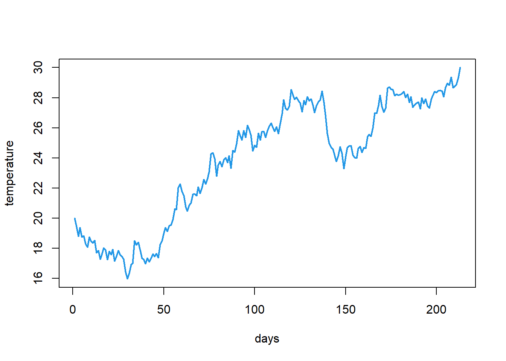

if (condition) {
Do this
And do this
}Loops and conditionals
The flow of code
Now you know how to create different kinds of objects and how to perform simple operations with them. However, very often you want to add more control over how operations are ran in R. You might want to execute a command only if a condition is satisfied. Or you might want to make the same operations for a number of elements. These are the kinds of situations for which you want to use flow control. What this refers to is basically altering how the code is executed. In a regular situations all commands from your script are executed from the first line all the way down to the last line. Flow control alters that either by specifying conditinal statements that tell R to execute a given chunk of code only if a condition is met or by using loops that repeat a given chunk of code.
Conditional statements
Another way conditional statements are referred to which may be more intuitive are if else statements. They allow you to tell R to execute given chunk of code if a condition is met and to do something else if the condition is not met.
The general logic of conditional statements looks like this:
A single if statement can have multiple conditions chained together with | and & operators. So, for example
x <- 5
y <- -5
if (x > 0 & y < 0) {
print("Hooray!")
}[1] "Hooray!"In many situations you want to state what is to be done if a condition is met and what to do otherwise. This turns your statement into an if else one. The only difference is that after the if statement you add else and specify what to do then in curly brackets. With this knowledge you can already create the rules for a simple game like paper, rock, scissors!
#set the choice for each player
player1 <- 'scissors'
player2 <- 'rock'
#define an if statement that outputs the result of the game
if (player1 == player2) {
print('draw')
} else if ((player1 == 'scissors' & player2 == 'paper') |
(player1 == 'paper' & player2 == 'rock') |
(player1 == 'rock' & player2 == 'scissors')) {
print('player 1 wins')
} else if ((player2 == 'scissors' & player1 == 'paper') |
(player2 == 'paper' & player1 == 'rock') |
(player2 == 'rock' & player1 == 'scissors')) {
print('player 2 wins')
} else {
print('these are not allowed moves')
}[1] "player 2 wins"Take a moment to study the code above. Notice what kinds of conditions are included in that statement. When writing an if statement it’s a good idea to consider all possible situations and how your if statement maps to them. In a paper, rock, scissors game you can have 3 outcomes: both players choose the same option (a draw), player 1 wins or player 2 wins. Notice that the code above includes also a fourth options specified in the last else statement. What if someone makes a typo and writes rook instead of rock? That last else statement safeguards us for such situations. If we didn’t include it and someone made a type then our if else statement wouldn’t produce anything. You can play around with different values of player1 and player2 to see the results.
One more thing about if else statements: in many situations it is a good idea to give some thought to what exactly a given statement is supposed to do and how large the statement needs to be. A good example is an if statement that is supposed to run some check (e.g. make sure that we are working with a numeric value) and stop execution if it detects a problem. Imagine a situation in which we want to do some calculations on numbers and want to make sure that we are indeed working with numeric values. you could design an if else statement that would do it:
x <- 'not a number'
y <- 3
if ((class(x) != 'numeric') | (class(y) != 'numeric')) {
stop('This is not a number!')
} else {
x + y
}Error in eval(expr, envir, enclos): This is not a number!Take a moment to look at the code above. Do you think it is good? It certainly gets the job done. Do you think it could be simplified?
In fact the else part is redundant in this case. The if statement runs the check on x and y and stops execution of the code if any of them is not numeric. If both values are numeric the execution of code simply proceeds. In this case adding an else statement makes the code harder to read (and imagine what would happen if we had to perform a number of checks like this! We would need a lot of if else statements that would make everything even less clear). The code below does the same thing as the if else statement above but is more clear.
x <- 'not a number'
y <- 3
if ((class(x) != 'numeric') | (class(y) != 'numeric')) {
stop('This is not a number!')
}
## Error in eval(expr, envir, enclos): This is not a number!
x + y
## Error in x + y: argument nieliczbowy przekazany do operatora dwuargumentowegoLoops
Another way of controlling the flow of your code is by repeating a given chunk of code. There are two basic ways to do that: repeat something a number of times or keep repeating until some condition is met. The first way is called a for loop and the second one a while loop.
for loops
Before we make our first for loop lets take a moment to see when a for loop is not needed. Recall again that a lot of things in R are vectorized. This means that operations on vectors are conducted element-wise. Thanks to this if you want to e.g. add 5 to each value stored in a numeric vector (in the language of a for loop: for every element of a vector, add 5 to it) you can just write vector_name + 5. No need for more complicated, explicit repetition. However, there are situations in which you have to make an explicit for loop to repeat something n times. The general structure of a for loops looks like this:
for (i in object) {
Do this to each element
}It’s worth keeping in mind what the i in the for loop is. In the example above i will be every consecutive element of object. However we could do a similar thing with:
for (i in 1:length(object)) {
do this to object[i]
}Now each i is a number from 1 to thew length of object and we access each element of object by using a proper (ith) index. Which way of running a for loop you choose might depend on the context. looping explicitly over elements of an object rather than indexes can be more intuitive but imagine you don’t want to do something to every element of an object but only to to a subset (e.g. from 3rd inwards). Doing it with indexes is easier. Generally the best approach is to think what you need first and write code code second, not the other way around.
library(microbenchmark)Warning: pakiet 'microbenchmark' został zbudowany w wersji R 4.3.1While loops
While loops will keep executing a given chunk of code as long as some condition is met. They aren’t very common in R, at least not until you start building your own algorithms or simulations from scratch. However, it’s worth knowing what they are in case you encounter them.
We can use a while loop to make a very simple simulation. Lets say we want to see how temperatures change from a given temperature (lets say 20 degrees Celsius) across time and that we represent time by some random change from each previous temperature. We can create a vector with such predicted temperatures and see how long it takes for it to reach a certain level (lets say 30 degrees Celsius). We represent the change by adding a random value from a normal distribution with mean = .05 and standard deviation = .5 (this is what the rnorm(1,.05,.5) does). The while loop would look something like this: We first create the initial value and a vector to store all temperatures and next we keep adding the random value to our temperature and storing all temperatures until it reaches 30. The last line tells R to plot all the temperatures as a line plot. This is of course a very, very, very simplistic simulation (temperatures don’t change in such a simple way) but it works to show you the idea behind while loops. We can then calculate e.g. how long it took for the temperature to reach a certain level.
C <- 20
results <- c(20)
while (C < 30) {
C <- C + rnorm(1,.05,.5)
results <- c(results, C)
}
plot(results, type = 'line', lwd = 2, col=4, xlab = "days", ylab = "temperature")Warning in plot.xy(xy, type, ...): plot type 'line' will be truncated to first
character
Because while loops do not have a fixed number of iteration they can potentially run infinitely. This is usually not something we want so it’s a good idea to make sure that your while loop eventually stops. In case you do get stuck in an infinite loop you can press Esc in your console and this should make RStudio stop the loop by force.
Truth is while loops are not common in R. You will rarely find yourself in situation where you need to perform some actions while a given condition is true (e.g. keep a program running until a user presses exit; keep displaying a board of a game until a player makes a move). However, it’s still good to know what while loops are so that you will know one when you see it.
Apply family
There is a special family of functions in R that makes working with for loops a bit easier. These functions let you specify what to loop over and what function to apply to each element but in a function rather than a whole loop with all the curly brackets and stuff.
The reason why this is a whole family of functions is that you can iterate in various ways and you can get the output in different formats. There are more functions in the family but the general ones are:
lapply()- loops over elements of a vector/list and returns a listsapply()- same as lapply but tries to simplify the result to a vector or matrixapply()- used for looping over 2 dimensional structures - it lets you specify if you want to loop over rows or columnstapply()- same as apply but lets you split the object you are looping over based on some factor (e.g. imagine you want to calculate the mean value of your dependent variable for each experimental condition).
Lets see some of these in action.
Example 1:
Imagine you are working with a list in R. You want to get information on how many elements each object in the list has. sapply makes it very easy:
my_list <- list(
1:50,
sample(300, 5),
c("random", "vector")
)
sapply(my_list, length)[1] 50 5 2Example 2:
There is a dataset available in R on airquality in New York City called airquality. It stores information on ozone, sun, wind and temperature from 5 months One of the things that might be of interest when looking at the dataset is what was the average value of each of the variables informing on airquality:
data("airquality")
d <- airquality
d <- na.omit(d)
apply(d[,1:4], 2, mean) Ozone Solar.R Wind Temp
42.09910 184.80180 9.93964 77.79279 Notice that the means calculated above are global means from the entire dataset. What is probably much more sensible is a mean for each month. There is one additional trick needed here. Tapply won’t allow us to split a number of columns by some vector and perform a given operation on each of the columns. That’s because tapply works on vectors. In order to get monthly means for all 4 columns we need to combine apply with tapply. What we need to do is start with apply and loop over the 4 columns of interest and for each of them use tapply that will split a given column by month and calculate the means. Combining functions can get us really far if only we give some thought to what each function does (including what are its inputs and outputs) and what we really need to do.
apply(d[,1:4], 2, function(x) tapply(x, d$Month, mean)) Ozone Solar.R Wind Temp
5 24.12500 182.0417 11.504167 66.45833
6 29.44444 184.2222 12.177778 78.22222
7 59.11538 216.4231 8.523077 83.88462
8 60.00000 173.0870 8.860870 83.69565
9 31.44828 168.2069 10.075862 76.89655One important thing about apply functions is that they are generally faster than explicit for loops. Same thing goes for vectorized code as well - it’s faster than a for loop. We can make a simple comparison by using the microbenchmark package to make the same thing with a for loop and apply() function.
Now if we look at the results:
bench |> gt::gt()| expr | time |
|---|---|
| for (i in 1:ncol(df)) { print(mean(df[, i])) } | 6014000 |
| for (i in 1:ncol(df)) { print(mean(df[, i])) } | 6336200 |
| for (i in 1:ncol(df)) { print(mean(df[, i])) } | 6127100 |
| for (i in 1:ncol(df)) { print(mean(df[, i])) } | 5485500 |
| apply(df, 2, mean) | 5182800 |
| for (i in 1:ncol(df)) { print(mean(df[, i])) } | 5276700 |
| apply(df, 2, mean) | 6587100 |
| for (i in 1:ncol(df)) { print(mean(df[, i])) } | 6146800 |
| for (i in 1:ncol(df)) { print(mean(df[, i])) } | 5642300 |
| for (i in 1:ncol(df)) { print(mean(df[, i])) } | 6269600 |
| apply(df, 2, mean) | 5500500 |
| apply(df, 2, mean) | 4427900 |
| apply(df, 2, mean) | 5633600 |
| apply(df, 2, mean) | 4963500 |
| apply(df, 2, mean) | 10431000 |
| for (i in 1:ncol(df)) { print(mean(df[, i])) } | 6088400 |
| apply(df, 2, mean) | 5321700 |
| apply(df, 2, mean) | 4441800 |
| for (i in 1:ncol(df)) { print(mean(df[, i])) } | 3640500 |
| apply(df, 2, mean) | 4554400 |
| for (i in 1:ncol(df)) { print(mean(df[, i])) } | 3611500 |
| apply(df, 2, mean) | 4462500 |
| for (i in 1:ncol(df)) { print(mean(df[, i])) } | 3609200 |
| apply(df, 2, mean) | 4661700 |
| apply(df, 2, mean) | 9418900 |
| apply(df, 2, mean) | 4213800 |
| apply(df, 2, mean) | 4139400 |
| apply(df, 2, mean) | 4275700 |
| for (i in 1:ncol(df)) { print(mean(df[, i])) } | 4788100 |
| for (i in 1:ncol(df)) { print(mean(df[, i])) } | 6819800 |
| apply(df, 2, mean) | 7952600 |
| for (i in 1:ncol(df)) { print(mean(df[, i])) } | 8632300 |
| apply(df, 2, mean) | 7024700 |
| for (i in 1:ncol(df)) { print(mean(df[, i])) } | 4883000 |
| apply(df, 2, mean) | 15036400 |
| apply(df, 2, mean) | 4728800 |
| for (i in 1:ncol(df)) { print(mean(df[, i])) } | 3907500 |
| for (i in 1:ncol(df)) { print(mean(df[, i])) } | 3913500 |
| for (i in 1:ncol(df)) { print(mean(df[, i])) } | 5781700 |
| apply(df, 2, mean) | 4529600 |
| for (i in 1:ncol(df)) { print(mean(df[, i])) } | 5104100 |
| for (i in 1:ncol(df)) { print(mean(df[, i])) } | 4846000 |
| apply(df, 2, mean) | 5998700 |
| for (i in 1:ncol(df)) { print(mean(df[, i])) } | 4643000 |
| apply(df, 2, mean) | 5297700 |
| apply(df, 2, mean) | 13698300 |
| apply(df, 2, mean) | 6378400 |
| apply(df, 2, mean) | 5445400 |
| for (i in 1:ncol(df)) { print(mean(df[, i])) } | 4668900 |
| for (i in 1:ncol(df)) { print(mean(df[, i])) } | 3526100 |
| apply(df, 2, mean) | 4666400 |
| for (i in 1:ncol(df)) { print(mean(df[, i])) } | 5593200 |
| apply(df, 2, mean) | 5837400 |
| apply(df, 2, mean) | 11693400 |
| for (i in 1:ncol(df)) { print(mean(df[, i])) } | 4501000 |
| for (i in 1:ncol(df)) { print(mean(df[, i])) } | 6473200 |
| apply(df, 2, mean) | 6234800 |
| for (i in 1:ncol(df)) { print(mean(df[, i])) } | 5112600 |
| apply(df, 2, mean) | 4627400 |
| apply(df, 2, mean) | 6461200 |
| apply(df, 2, mean) | 5254900 |
| for (i in 1:ncol(df)) { print(mean(df[, i])) } | 4005900 |
| for (i in 1:ncol(df)) { print(mean(df[, i])) } | 3766000 |
| for (i in 1:ncol(df)) { print(mean(df[, i])) } | 5200200 |
| apply(df, 2, mean) | 12307600 |
| apply(df, 2, mean) | 5620900 |
| for (i in 1:ncol(df)) { print(mean(df[, i])) } | 6552200 |
| apply(df, 2, mean) | 5505100 |
| for (i in 1:ncol(df)) { print(mean(df[, i])) } | 5344200 |
| apply(df, 2, mean) | 7330500 |
| for (i in 1:ncol(df)) { print(mean(df[, i])) } | 4975900 |
| apply(df, 2, mean) | 10221100 |
| for (i in 1:ncol(df)) { print(mean(df[, i])) } | 5559200 |
| for (i in 1:ncol(df)) { print(mean(df[, i])) } | 4838800 |
| for (i in 1:ncol(df)) { print(mean(df[, i])) } | 5432000 |
| for (i in 1:ncol(df)) { print(mean(df[, i])) } | 4554300 |
| apply(df, 2, mean) | 6142900 |
| for (i in 1:ncol(df)) { print(mean(df[, i])) } | 5575700 |
| apply(df, 2, mean) | 5605600 |
| for (i in 1:ncol(df)) { print(mean(df[, i])) } | 3772900 |
| apply(df, 2, mean) | 5746700 |
| apply(df, 2, mean) | 11413600 |
| apply(df, 2, mean) | 4585900 |
| apply(df, 2, mean) | 7119100 |
| apply(df, 2, mean) | 5810800 |
| for (i in 1:ncol(df)) { print(mean(df[, i])) } | 4210500 |
| for (i in 1:ncol(df)) { print(mean(df[, i])) } | 7075600 |
| for (i in 1:ncol(df)) { print(mean(df[, i])) } | 7427600 |
| for (i in 1:ncol(df)) { print(mean(df[, i])) } | 7190400 |
| apply(df, 2, mean) | 9195100 |
| for (i in 1:ncol(df)) { print(mean(df[, i])) } | 6143900 |
| apply(df, 2, mean) | 6081800 |
| apply(df, 2, mean) | 5664400 |
| for (i in 1:ncol(df)) { print(mean(df[, i])) } | 5313100 |
| for (i in 1:ncol(df)) { print(mean(df[, i])) } | 5198100 |
| apply(df, 2, mean) | 10123200 |
| for (i in 1:ncol(df)) { print(mean(df[, i])) } | 6035900 |
| for (i in 1:ncol(df)) { print(mean(df[, i])) } | 5840200 |
| apply(df, 2, mean) | 5176800 |
| for (i in 1:ncol(df)) { print(mean(df[, i])) } | 3679100 |
| apply(df, 2, mean) | 5573300 |
| apply(df, 2, mean) | 13744200 |
| apply(df, 2, mean) | 4809400 |
| for (i in 1:ncol(df)) { print(mean(df[, i])) } | 5323600 |
| apply(df, 2, mean) | 3982500 |
| apply(df, 2, mean) | 4321100 |
| apply(df, 2, mean) | 4331400 |
| apply(df, 2, mean) | 4533100 |
| for (i in 1:ncol(df)) { print(mean(df[, i])) } | 3593100 |
| for (i in 1:ncol(df)) { print(mean(df[, i])) } | 3397700 |
| apply(df, 2, mean) | 10203900 |
| for (i in 1:ncol(df)) { print(mean(df[, i])) } | 3622900 |
| apply(df, 2, mean) | 4368800 |
| apply(df, 2, mean) | 4319500 |
| apply(df, 2, mean) | 4433300 |
| for (i in 1:ncol(df)) { print(mean(df[, i])) } | 3400000 |
| for (i in 1:ncol(df)) { print(mean(df[, i])) } | 3163600 |
| apply(df, 2, mean) | 4134400 |
| for (i in 1:ncol(df)) { print(mean(df[, i])) } | 3121700 |
| for (i in 1:ncol(df)) { print(mean(df[, i])) } | 3136200 |
| for (i in 1:ncol(df)) { print(mean(df[, i])) } | 3099000 |
| apply(df, 2, mean) | 4057400 |
| for (i in 1:ncol(df)) { print(mean(df[, i])) } | 3135200 |
| for (i in 1:ncol(df)) { print(mean(df[, i])) } | 2878100 |
| for (i in 1:ncol(df)) { print(mean(df[, i])) } | 3106900 |
| for (i in 1:ncol(df)) { print(mean(df[, i])) } | 2981100 |
| apply(df, 2, mean) | 8378300 |
| for (i in 1:ncol(df)) { print(mean(df[, i])) } | 3204500 |
| for (i in 1:ncol(df)) { print(mean(df[, i])) } | 3143800 |
| for (i in 1:ncol(df)) { print(mean(df[, i])) } | 3145800 |
| apply(df, 2, mean) | 3615000 |
| for (i in 1:ncol(df)) { print(mean(df[, i])) } | 3096300 |
| for (i in 1:ncol(df)) { print(mean(df[, i])) } | 2942200 |
| apply(df, 2, mean) | 3926500 |
| for (i in 1:ncol(df)) { print(mean(df[, i])) } | 3055500 |
| apply(df, 2, mean) | 3548700 |
| apply(df, 2, mean) | 3810900 |
| for (i in 1:ncol(df)) { print(mean(df[, i])) } | 3087100 |
| for (i in 1:ncol(df)) { print(mean(df[, i])) } | 3054600 |
| apply(df, 2, mean) | 8573300 |
| apply(df, 2, mean) | 3531000 |
| for (i in 1:ncol(df)) { print(mean(df[, i])) } | 3587800 |
| apply(df, 2, mean) | 3855400 |
| for (i in 1:ncol(df)) { print(mean(df[, i])) } | 3141600 |
| apply(df, 2, mean) | 3745900 |
| apply(df, 2, mean) | 3894000 |
| apply(df, 2, mean) | 8094900 |
| for (i in 1:ncol(df)) { print(mean(df[, i])) } | 3152200 |
| apply(df, 2, mean) | 3702800 |
| for (i in 1:ncol(df)) { print(mean(df[, i])) } | 3425500 |
| for (i in 1:ncol(df)) { print(mean(df[, i])) } | 3155500 |
| apply(df, 2, mean) | 3810000 |
| for (i in 1:ncol(df)) { print(mean(df[, i])) } | 3099900 |
| apply(df, 2, mean) | 3629300 |
| for (i in 1:ncol(df)) { print(mean(df[, i])) } | 3262200 |
| apply(df, 2, mean) | 8505300 |
| for (i in 1:ncol(df)) { print(mean(df[, i])) } | 3170300 |
| for (i in 1:ncol(df)) { print(mean(df[, i])) } | 3332600 |
| apply(df, 2, mean) | 4026400 |
| apply(df, 2, mean) | 3782000 |
| apply(df, 2, mean) | 3671500 |
| for (i in 1:ncol(df)) { print(mean(df[, i])) } | 3075300 |
| for (i in 1:ncol(df)) { print(mean(df[, i])) } | 3137600 |
| for (i in 1:ncol(df)) { print(mean(df[, i])) } | 2986600 |
| for (i in 1:ncol(df)) { print(mean(df[, i])) } | 2953200 |
| for (i in 1:ncol(df)) { print(mean(df[, i])) } | 2874500 |
| for (i in 1:ncol(df)) { print(mean(df[, i])) } | 2962100 |
| apply(df, 2, mean) | 7198400 |
| for (i in 1:ncol(df)) { print(mean(df[, i])) } | 2980800 |
| apply(df, 2, mean) | 3548800 |
| for (i in 1:ncol(df)) { print(mean(df[, i])) } | 3115500 |
| apply(df, 2, mean) | 3417500 |
| apply(df, 2, mean) | 6240400 |
| for (i in 1:ncol(df)) { print(mean(df[, i])) } | 3284400 |
| for (i in 1:ncol(df)) { print(mean(df[, i])) } | 3310400 |
| apply(df, 2, mean) | 4424300 |
| apply(df, 2, mean) | 3791600 |
| apply(df, 2, mean) | 7974300 |
| for (i in 1:ncol(df)) { print(mean(df[, i])) } | 3490100 |
| for (i in 1:ncol(df)) { print(mean(df[, i])) } | 3430000 |
| apply(df, 2, mean) | 3913900 |
| apply(df, 2, mean) | 5619100 |
| for (i in 1:ncol(df)) { print(mean(df[, i])) } | 3619300 |
| apply(df, 2, mean) | 3396800 |
| for (i in 1:ncol(df)) { print(mean(df[, i])) } | 3356300 |
| for (i in 1:ncol(df)) { print(mean(df[, i])) } | 3180400 |
| apply(df, 2, mean) | 9818300 |
| apply(df, 2, mean) | 3742300 |
| apply(df, 2, mean) | 4781700 |
| apply(df, 2, mean) | 5005400 |
| for (i in 1:ncol(df)) { print(mean(df[, i])) } | 3639900 |
| for (i in 1:ncol(df)) { print(mean(df[, i])) } | 3379400 |
| apply(df, 2, mean) | 4777800 |
| for (i in 1:ncol(df)) { print(mean(df[, i])) } | 3982200 |
| apply(df, 2, mean) | 5099100 |
| for (i in 1:ncol(df)) { print(mean(df[, i])) } | 4138500 |
| apply(df, 2, mean) | 10823300 |
| for (i in 1:ncol(df)) { print(mean(df[, i])) } | 4245900 |
| apply(df, 2, mean) | 4809400 |
| apply(df, 2, mean) | 4412600 |
Exercises
- Try to code the logic of assigning points to players of a prisoner dilemma with a given matrix:

- Create a for loop that will print out the first 50 numbers from the Fibonacci sequence
- Given the
irisdataframe (you can load it withdata("iris")loop over all of its columns and calculate the mean of every numeric column